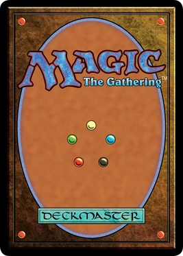
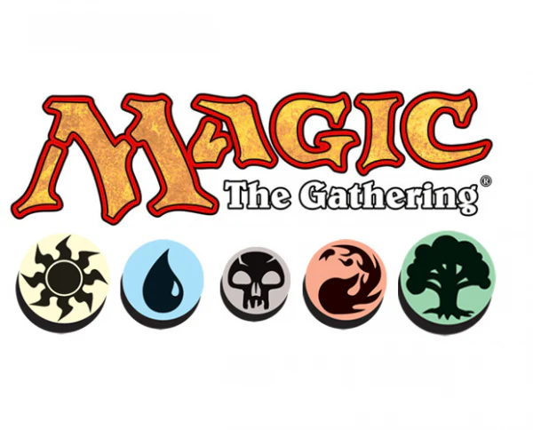

Magic: The Gathering, the brainchild of mathematician Richard Garfield, was first published by Wizards of the Coast in 1993. As the world’s first trading card game, it introduced a groundbreaking concept that combined strategy, skill, and collectibility. Initially, the game quickly gained a passionate following, drawing players into its intricate gameplay and the rich fantasy world it created. The original set, known as Alpha, featured 295 cards, and its immediate success led to the rapid release of subsequent sets and expansions. Over the years, Magic: The Gathering has evolved significantly. It introduced various mechanics and themes, continually expanding the game's depth and complexity. Each new expansion brought fresh strategies, stories, and characters, adding to the game's vast and diverse universe. The game’s lore has grown into an extensive narrative, encompassing numerous planes of existence and a diverse cast of characters known as Planeswalkers. Magic’s organized play system, including Friday Night Magic and the Pro Tour, has fostered a vibrant competitive scene, making it a staple in both casual and competitive gaming communities.

Today, Magic: The Gathering is more than just a game; it’s a global phenomenon that has influenced numerous other games and maintained a thriving community of players and collectors for over three decades. Its impact extends beyond the tabletop, with digital adaptations and a strong online presence, ensuring that Magic remains accessible to new generations of players. The game's enduring popularity is a testament to its innovative design, compelling storytelling, and the passionate community that continues to support and expand its legacy.
